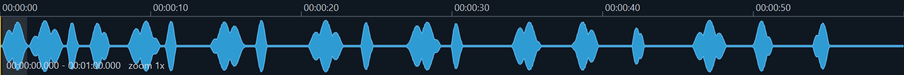
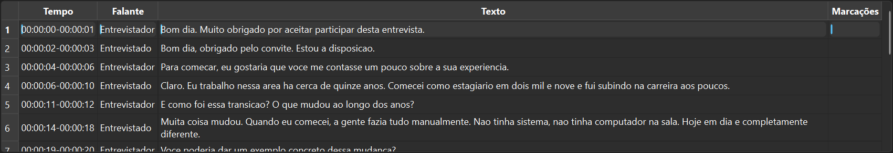

Transcricao de entrevistas sem dor de cabeca
Interview transcription without the headache
Tudo que um pesquisador precisa
Everything a researcher needs
Estudio de Revisao
Review Studio
Player de audio sincronizado com a transcricao. Clique em qualquer trecho para ouvir. Edite texto, corrija falantes, junte ou divida turnos — tudo na mesma tela.
Audio player synced with transcript. Click any passage to listen. Edit text, fix speakers, merge or split turns — all in one screen.

Separacao de falantes
Speaker diarization
Identifica automaticamente quem fala em cada trecho. Entrevistador e entrevistado recebem rotulos distintos — corrigiveis com um clique.
Automatically identifies who speaks in each segment. Interviewer and interviewee get distinct labels — correctable with one click.

7 formatos de exportacao
7 export formats
Um clique para gerar o que voce precisar.
One click to generate what you need.
Funciona em qualquer PC
Works on any PC
Roda em CPU (qualquer computador) ou GPU NVIDIA (ate 10x mais rapido). Voce escolhe.
Runs on CPU (any computer) or NVIDIA GPU (up to 10x faster). Your choice.
Waveform interativa
Interactive waveform
Zoom com scroll, arraste para navegar, regua de tempo, cursor sincronizado com o audio.
Scroll to zoom, drag to navigate, time ruler, cursor synced with audio.
IA de referencia mundial
World-class AI
Whisper large-v3 (OpenAI): treinado em 680 mil horas de audio. Alinhamento palavra por palavra. 99 idiomas.
Whisper large-v3 (OpenAI): trained on 680K hours of audio. Word-level alignment. 99 languages.
A inteligencia artificial por detras
The AI under the hood
O Transcritorio combina modelos de IA de ponta, desenvolvidos por algumas das maiores instituicoes de pesquisa do mundo, e os executa inteiramente no seu computador. Nenhum audio e enviado para a internet.
Transcritorio combines cutting-edge AI models developed by world-leading research institutions and runs them entirely on your computer. No audio is ever sent to the internet.
Pipeline de processamento
Processing pipeline
Whisper large-v3 (OpenAI)
O modelo de reconhecimento de fala mais avancado disponivel publicamente. Desenvolvido pela OpenAI e treinado em 680.000 horas de audio em 99 idiomas, incluindo portugues brasileiro. E o mesmo motor usado pelos melhores servicos comerciais de transcricao.
The most advanced publicly available speech recognition model. Developed by OpenAI and trained on 680,000 hours of audio across 99 languages, including Brazilian Portuguese. The same engine used by the best commercial transcription services.
O que significa para voce: a transcricao automatica chega mais perto do que qualquer ferramenta conseguia ha poucos anos. Pontuacao automatica, reconhecimento de sotaques regionais e robustez a ruido de fundo.
What this means for you: automatic transcription comes closer to human quality than any tool could achieve just a few years ago. Automatic punctuation, regional accent recognition, and robustness to background noise.
WhisperX + faster-whisper (CTranslate2)
O Whisper original gera texto, mas sem precisao temporal fina. O WhisperX adiciona alinhamento forcado: cada palavra recebe um timestamp exato, permitindo sincronizar o texto com o audio no nivel de cada palavra.
The original Whisper generates text but without fine temporal precision. WhisperX adds forced alignment: each word gets an exact timestamp, enabling word-level audio-text synchronization.
O faster-whisper (CTranslate2) otimiza a inferencia: usa quantizacao (float16/int8) para reduzir o consumo de memoria e acelerar o processamento em ate 4x, sem perda perceptivel de qualidade.
faster-whisper (CTranslate2) optimizes inference: uses quantization (float16/int8) to reduce memory usage and accelerate processing up to 4x, with no perceptible quality loss.
pyannote.audio (CNRS / Herve Bredin)
Saber o que foi dito nao basta — em uma entrevista, e essencial saber quem disse. O pyannote.audio e um modelo de IA especializado em diarizacao: identifica e separa os falantes ao longo do audio.
Knowing what was said isn't enough — in an interview, it's essential to know who said it. pyannote.audio is an AI model specialized in speaker diarization: it identifies and separates speakers throughout the audio.
O Transcritorio usa o modo exclusivo: cada trecho e atribuido a exatamente um falante, eliminando ambiguidades. Os rotulos ("Entrevistador", "Entrevistado") sao personalizaveis e corrigiveis com um clique no Estudio de Revisao.
Transcritorio uses exclusive mode: each segment is assigned to exactly one speaker, eliminating ambiguity. Labels ("Interviewer", "Interviewee") are customizable and correctable with one click in the Review Studio.
CPU ou GPU — voce escolhe
CPU or GPU — your choice
Modelos de IA como Whisper e pyannote sao redes neurais — programas que aprenderam padroes a partir de milhoes de exemplos. Essas redes processam dados em paralelo, e por isso se beneficiam enormemente de GPUs (placas de video), que tem milhares de nucleos de processamento.
AI models like Whisper and pyannote are neural networks — programs that learned patterns from millions of examples. These networks process data in parallel, which is why they benefit enormously from GPUs (graphics cards) with thousands of processing cores.
Mas GPU nao e obrigatoria. O Transcritorio funciona perfeitamente em modo CPU. A diferenca e a velocidade: com GPU, 1 hora de audio leva ~5-10 minutos; sem GPU, leva ~1-2 horas. A qualidade do resultado e a mesma.
But a GPU is not required. Transcritorio works perfectly in CPU mode. The difference is speed: with a GPU, 1 hour of audio takes ~5-10 minutes; without, ~1-2 hours. Result quality is the same.
Seus dados de pesquisa ficam onde devem ficar: com voce
Your research data stays where it belongs: with you
O Transcritorio foi projetado para pesquisadores que trabalham com material sensivel: entrevistas, TCLEs, gravacoes confidenciais. Nenhum audio, video ou transcricao e enviado para a internet.
Transcritorio was designed for researchers working with sensitive material: interviews, consent forms, confidential recordings. No audio, video, or transcript is ever sent to the internet.
100% offline
100% offline
Modelos baixados uma vez, tudo roda sem internet. Telemetria desabilitada por padrao.
Models downloaded once, everything runs without internet. Telemetry disabled by default.
Modelos locais
Local models
WhisperX e pyannote rodam na sua GPU. Sem APIs externas, sem servidores intermediarios.
WhisperX and pyannote run on your GPU. No external APIs, no intermediary servers.
Originais intocados
Originals untouched
Arquivos originais nunca sao alterados. Saidas vao para a pasta Transcricoes/, separada dos originais.
Original files are never modified. Outputs go to a separate Transcricoes/ folder.
Compativel com comites de etica
Ethics committee compliant
Se o seu TCLE garante que gravacoes nao serao compartilhadas, o Transcritorio permite cumprir essa promessa.
If your consent form guarantees recordings won't be shared, Transcritorio lets you keep that promise.
Do instalador a transcricao pronta
From installer to finished transcript
Instale o Transcritorio
Install Transcritorio
Baixe o instalador (2 arquivos, ~2 GB total), execute e siga as instrucoes. O app ja inclui tudo: motor de transcricao, conversor de audio e interface grafica.
Download the installer (2 files, ~2 GB total), run it and follow the prompts. The app includes everything: transcription engine, audio converter, and GUI.
.exe e o .bin para a mesma pasta.
.exe and .bin to the same folder.
Baixe os modelos de reconhecimento de fala
Download speech recognition models
No primeiro uso, o app guia voce para baixar os modelos de IA (~3 GB). Voce vai precisar de uma chave de acesso gratuita do Hugging Face — como um cartao de biblioteca digital.
On first launch, the app guides you through downloading AI models (~3 GB). You'll need a free access key from Hugging Face — like a digital library card.
Crie um projeto e adicione midias
Create a project and add media
Projeto > Novo projeto, depois Adicionar midia para selecionar arquivos de audio ou video. Defina idioma e numero de falantes.
Project > New project, then Add media to select audio or video files. Set language and number of speakers.
Transcreva
Transcribe
Selecione as entrevistas e clique Transcrever. O processamento completo roda automaticamente: preparacao de audio, transcricao, separacao de falantes e montagem.
Select interviews and click Transcribe. The full processing runs automatically: audio preparation, transcription, speaker separation, and assembly.
~8 min para 1h de audio com GPU NVIDIA
~8 min per audio hour with NVIDIA GPU
Revise e exporte
Review and export
Use o Estudio de Revisao para corrigir texto, ajustar falantes e marcar trechos duvidosos. Exporte em DOCX, SRT, NVivo ou 4 outros formatos com um clique.
Use the Review Studio to fix text, adjust speakers, and flag uncertain passages. Export to DOCX, SRT, NVivo or 4 other formats with one click.
Quanto tempo leva?
How long does it take?
O que voce precisa
What you need
O Transcritorio roda em qualquer PC com Windows. Uma GPU NVIDIA acelera o processamento, mas nao e obrigatoria. O espaco em disco e o custo de ter tudo funcionando localmente, sem depender da nuvem.
Transcritorio runs on any Windows PC. An NVIDIA GPU speeds up processing but is not required. Disk space is the cost of running everything locally, without depending on the cloud.
Qualquer PC
Any PC
Windows 10/11 (64-bit)
8 GB RAM
~8 GB de espaco em disco
~8 GB disk space
Sem GPU (modo CPU)
No GPU (CPU mode)
~1-2h por hora de audio
~1-2h per audio hour
PC com GPU NVIDIA
PC with NVIDIA GPU
Windows 10/11 (64-bit)
16 GB RAM
SSD com ~8 GB livres
SSD with ~8 GB free
GPU NVIDIA 4-6 GB VRAM (GTX 1060+)
NVIDIA GPU 4-6 GB VRAM (GTX 1060+)
~10-15 min por hora de audio
~10-15 min per audio hour
Workstation com GPU forte
Workstation with strong GPU
Windows 10/11 (64-bit)
16-32 GB RAM
SSD NVMe
GPU NVIDIA 8+ GB VRAM (RTX 3060+)
NVIDIA GPU 8+ GB VRAM (RTX 3060+)
~5-8 min por hora de audio
~5-8 min per audio hour
FAQ
Preciso de internet para transcrever?
Do I need internet to transcribe?
Nao. Depois de baixar os modelos na instalacao (~3 GB), tudo funciona offline. A telemetria e desabilitada por padrao.
No. After downloading models during setup (~3 GB), everything works offline. Telemetry is disabled by default.
O que e a chave de acesso do Hugging Face?
What is the Hugging Face access key?
E uma chave gratuita para baixar modelos de IA. Funciona como um cartao de biblioteca: voce cria uma conta, gera a chave e usa apenas uma vez para baixar os modelos. A chave e protegida por criptografia local e nunca e gravada nos seus projetos.
It's a free key to download AI models. Like a library card: create an account, generate the key, use it once to download models. The key is protected by local encryption and never saved in your projects.
Funciona com video?
Does it work with video?
Sim. O Transcritorio aceita MP3, M4A, WAV, MP4, AVI, MKV, MOV e outros. O audio e extraido automaticamente.
Yes. Transcritorio accepts MP3, M4A, WAV, MP4, AVI, MKV, MOV and more. Audio is extracted automatically.
Posso usar para outros idiomas?
Can I use it for other languages?
Sim. O motor Whisper suporta 90+ idiomas. O portugues brasileiro e o padrao, mas voce pode configurar qualquer idioma nas propriedades de cada arquivo.
Yes. The Whisper engine supports 90+ languages. Brazilian Portuguese is the default, but you can configure any language per file.
A transcricao automatica e perfeita?
Is automatic transcription perfect?
Nao. Nenhuma transcricao automatica e perfeita. O Transcritorio gera um rascunho de alta qualidade que reduz drasticamente o trabalho de revisao. Trechos com ruido ou sobreposicao podem exigir correcao — o Estudio de Revisao foi feito para tornar essa etapa rapida.
No. No automatic transcription is perfect. Transcritorio generates a high-quality draft that drastically reduces review work. Noisy or overlapping sections may need correction — the Review Studio makes this fast.
E gratuito mesmo?
Is it really free?
Sim. Software livre, codigo aberto, sem versao paga, sem assinatura, sem limite de uso, sem marca d'agua. Desenvolvido em contexto academico para atender uma necessidade real de pesquisa.
Yes. Free software, open source, no paid version, no subscription, no usage limits, no watermarks. Developed in an academic context to address a real research need.